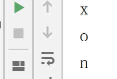
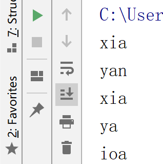
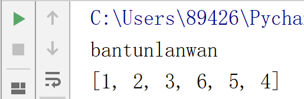
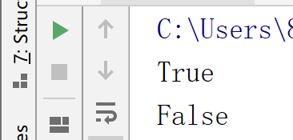
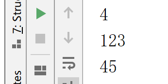

这里讲一基本概念：容器---可以包含其他对象的对象；两种主要的容器是序列（列表和元祖）和映射（字典）
关于序列的通用基本操作：python中常用的序列主要有两种：列表和元祖 -------索引，切片，相加，相乘和资格检查
1.索引：序列中的所有元素都有编号，从0开始
names='xiaoyan'
print(names[0])
print(names[3])
print(names[-1])
结果：

2.切片：访问特定范围的元素
names='xiaoyan'
print(names[0:3]) # 特定范围，不包括最后一个元素
print(names[4:])
print(names[:3])
print(names[-3:-1]) # 逆序
print(names[1:6:2]) # [1,6) 范围内-2为步长， 步长可以为负数
print(names[:]) # 复制结果：
3.序列相机与相乘
相加：
Names='lanwan'
LastNames='bantun'
[1,2,3]+[6,5,4]
print(LastNames+Names)
print([1,2,3]+[6,5,4])
结果： 注意：列表和字符串不能相加
相乘：
print('python'*5)
结果：pythonpythonpythonpythonpython4.成员资格检查：
names='bantunlanwan'
print('w' in names)
print('f' in names)结果：
5.内置函数 len max min
numbers=[123,45,67,97]
print(len(numbers))
print(max(numbers))
print(min(numbers))结果：